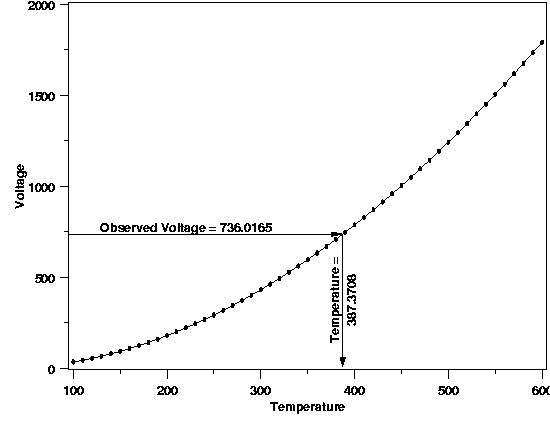
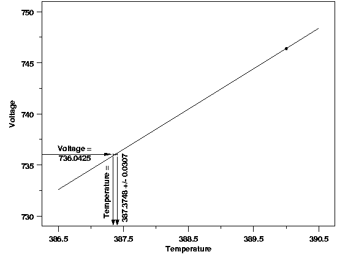

|
4.
Process Modeling
4.1. Introduction to Process Modeling 4.1.3. What are process models used for?
|
|||
| More on Calibration | As mentioned in the page introducing the different uses of process models, the goal of calibration is to quantitatively convert measurements made on one of two measurement scales to the other measurement scale. The two scales are generally not of equal importance, so the conversion occurs in only one direction. The primary measurement scale is usually the scientifically relevant scale and measurements made directly on this scale are often the more precise (relatively) than measurements made on the secondary scale. A process model describing the relationship between the two measurement scales provides the means for conversion. A process model that is constructed primarily for the purpose of calibration is often referred to as a "calibration curve". A graphical depiction of the calibration process is shown in the plot below, using the example described next. | ||
| Example | Thermocouples are a common type of temperature measurement device that is often more practical than a thermometer for temperature assessment. Thermocouples measure temperature in terms of voltage, however, rather than directly on a temperature scale. In addition, the response of a particular thermocouple depends on the exact formulation of the metals used to construct it, meaning two thermocouples will respond somewhat differently under identical measurement conditions. As a result, thermocouples need to be calibrated to produce interpretable measurement information. The calibration curve for a thermocouple is often constructed by comparing thermocouple output to relatively precise thermometer data. Then, when a new temperature is measured with the thermocouple, the voltage is converted to temperature terms by plugging the observed voltage into the regression equation and solving for temperature. | ||
| The plot below shows a calibration curve for a thermocouple fit with a locally quadratic model using a method called LOESS. Traditionally, complicated, high-degree polynomial models have been used for thermocouple calibration, but locally linear or quadratic models offer better computational stability and more flexibility. With the locally quadratic model the solution of the regression equation for temperature is done numerically rather than analytically, but the concept of calibration is identical regardless of which type of model is used. It is important to note that the thermocouple measurements, made on the secondary measurement scale, are treated as the response variable and the more precise thermometer results, on the primary scale, are treated as the predictor variable because this best satisfies the underlying assumptions of the analysis. | |||
| Thermocouple Calibration | |||
| Just as in estimation or prediction, if the calibration experiment were repeated, the results would vary slighly due to the randomness in the data and the need to sample a limited amount of data from the process. This means that an uncertainty statement that quantifies how much the results of a particular calibration could vary due to randomness is necessary. The plot below shows what would happen if the thermocouple calibration were repeated under conditions identical to the first experiment. | |||
| Calibration Result from Repeated Experiment |  | ||
| Calibration Uncertainty | Again, as with prediction, the data used to fit the process model can also be used to determine the uncertainty in the calibration. Both the variation in the estimated model parameters and in the new voltage observation need to be accounted for. This is similar to uncertainty for the prediction of a new measurement. In fact, calibration intervals are computed by solving for the predictor variable value in the formulas for a prediction interval end points. The plot below shows a 99 % calibration interval for the original calibration data used in the first plot on this page. The area of interest in the plot has been magnified so the endpoints of the interval can be visually differentiated. The calibration interval is 387.3748 ± 0.307 degrees Celsius. | ||
|  | |||
| In almost all calibration applications the ultimate quantity of interest is the true value of the primary-scale measurement method associated with a measurement made on the secondary scale. As a result, there are no analogs of the prediction interval or tolerance interval in calibration. | |||
| More Info | More information on the construction and interpretation of calibration intervals can be found in Section 5.2 of this chapter. There is also more information on calibration, especially "one-point" calibrations and other special cases, in Section 3 of Chapter 2: Measurement Process Characterization. | ||

{kind=link}
{kind=link}
{kind=link}